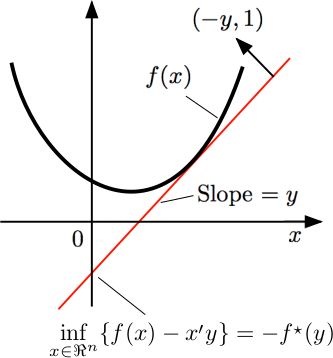

Pre-requisite:
Convex conjugate is Fenchel conjugate, It's also called the Fenchel Legendre Transform. The below information is from the internet and the AMATH 515 class I took. There are several important things regarding convex conjugate functions:
Definition
Let $f(x): \mathbb{R}^n \mapsto \mathbb{R} \cup {-\infty, \infty}$, then the Fenchel Conjugate is defined to be: $$ f^\star(y) = \sup_{x \in E} \left\lbrace y^Tx - f(x) \right\rbrace $$
Notations
For clear notations, we will present conjugating a function wrt to a specific parameter for an expression, and show what inputs are given. For example, taking the conjugation of $f(Ax + b, y)$ wrt to $x$ and evaluating the conjugate at $z$ is denoted as:
$$ \begin{aligned} {[f(Ax + b, y)|x]}^\star(z) \end{aligned} $$
Remarks:
The conjugate function is always convex, see the next section for more info. We prove it by presenting the convex conjugate of any function as a support function on the epigraph of the function over $\mathbb E\times \mathbb R$.
$\forall (y, \alpha) \in {\text{epi}}(f^\star)$, we have the claim that $f(x) \ge \langle y, x\rangle - \alpha$
Please observe that the vector from $\text{epi}(f)$ is the slope of a supporting hyperplane of the original function $f(x)$. The relation between original and conjugate function can be expressed as: $f(x)\ge y^Tx - f^\star(y)$. This is refers to as the Cauchy Subgradient inequality or Fenchel inequality.
Justification
Directly from the definition of the conjugate function we state:
$$ \begin{aligned} & \forall (y, \alpha) \in \text{epi}(f^\star) \ & \alpha \ge f^\star(y) \ge \langle y, x\rangle - f(x) \quad \forall x,y \ \implies & f(x) \ge \langle y, x\rangle - \alpha \end{aligned} $$
Remarks
The conjugate function $f^\star(x)$'s value provides the least offset of the affine functions that is below the functon $f$, given the slope of the affine function.
In fact, one can go on and make the claim the the epigraph of the original function is contains within all the halfspaces defined by the convex conjugate functions. Therefore, using the above inequality, we can easily obtain that:
$$ \begin{aligned} & \forall (x, \beta)\in \text{epi}(f), (y, \alpha)\in \text{epi}(f^\star) \ & \beta \ge f(x)\ge \langle y, x\rangle - \alpha \ \implies & \text{epi(f)} \subseteq \bigcap_{(y, \alpha)\in \text{epi}(f^\star)}{(x, \beta): \beta \ge \langle y, x\rangle - \alpha} \end{aligned} $$
And it's not hard to see that the epigraph is described by intersection of all possible halfspaces, giving us a convex set in the end. However, the hard part to justify here is $\text{cl}\circ\text{cvxh}\circ \text{epi}(f)$ equals to the intersection of all the affine minorants defined by the epigraph of the convex conjugate functions.
Theorem: Conjugate is the Support Function of the Epigraph of $f$
The support function over the epigraph of function $f$ is the conjugate function $f^\star$, but in a high dimension. To quantify the epigraph, Define the convex indicator over the epigraph:
$$
\delta_Q(x) := \begin{cases}
0 & x \in Q
\
+\infty &x \not\in Q
\end{cases}
$$
Recall the definition from the support functions and consider:
$$ \begin{aligned} f^\star(x) &= \sup_y{\langle y, x\rangle - f(y)} \ &= \sup_{y} \left\lbrace \left\langle \begin{bmatrix} y\ f(y) \end{bmatrix} , \begin{bmatrix} x \ -1 \end{bmatrix} \right\rangle \right\rbrace \ &= \sup_{z\in \text{epi}(f)} \left\lbrace \left\langle z, \begin{bmatrix} x \ -1 \end{bmatrix} \right\rangle \right\rbrace \ &= \delta^\star_{\text{epi}(f)}\left( \begin{bmatrix} x \ - 1 \end{bmatrix} \right) \end{aligned} $$
From the first line the the second line, we make the intuitive argument that the finite value for supremum is always attain at the boundary of the epigraph, then using that we construct $z = [y ;f(y)]^T$ to denote it. And finally we arrive at the fact that, the conjugate function is the suppotr function for $\text{epi}(f)$, along the vector $[x; - 1]^T$.
Corollary: Convex Conjugate is Convex
Using the fact that the support function of any set is closed and convex (which is proved in: Support Function) and the above representation of conjugate function via the support function, we know that the conjugate funciton is also closed and convex.
Remarks
Using this property, we can make shortcut to finding the conjugates of some functions that has a nice epigraphical interpretation, one of the great example would be the pointwise maximum function, or the infimal convolutions.

The dual variable is the slope of the tangent line and the value of the function is the negative of the y intersect (or whatever intersect on the higher dimension).
Observe
Given $z$ the dual varible, representing the slope of the line I want to "touch" the function $f$ at its lowest point, then $f^\star(z)$ gives me exactly the negative y intersect I need to move my line $z^Tx$ to touch $f$, at the point $x$, the dual variable.
Theorem: Biconjugate Function is Always Smaller
$$ f^{\star\star}(x) \le f(x) $$
Such a claim make sense geometrically, a convex envelop is reconstructed using the conjugate of the original function, and it will always be smaller in quantity.
Proof
$$ \begin{aligned} f^{\star\star}(z) = \sup_x \left\lbrace z^Tx - f^\star(x) \right\rbrace & = \sup_x \left\lbrace z^Tx - \sup_{y} \left\lbrace z^Ty - f(y) \right\rbrace \right\rbrace \\underset{[1]}{\implies} \sup_x \left\lbrace \inf_{y} \left\lbrace z^T(x - y) + f(y) \right\rbrace \right\rbrace &\le \inf_y \left\lbrace \sup_x \left\lbrace z^T(x - y) + f(y) \right\rbrace \right\rbrace \end{aligned} $$
Corollary: The Biconjugate Theorem
$$ \text{epi}(f^{\star\star}) = \text{cl}\circ \text{cvxh}\circ\text{epi}(f) $$ The epigrah of the biconjugate function is the closure of the convex hull of the epigraph of the original function.
Proof
See Biconjugate Theorem for a more detailed proof of the theorem.
In this section we list some important quick rules for computing the convex onjugation of functions.
$$ \begin{array}{|c|c|c|c|} \hline f(x) & \operatorname{dom} f & f^{\star}(y) & \operatorname{dom} f^{\star} \ \hline \hline|x| & \mathbb{R} & 0 & {[-1,1]} \ \hline \frac{1}{p}|x|^{p}, p>1 & \mathbb{R} & \frac{1}{q}|y|^{q} \quad\left(\frac{1}{p}+\frac{1}{q}=1\right) & \mathbb{R} \ \hline \sqrt{1+x^{2}} & \mathbb{R} & -\sqrt{1-y^{2}} & {[-1,1]} \ \hline-\log (x) & (0, \infty) & -1-\log (-y) & (-\infty, 0) \ \hline e^{x} & \mathbb{R} & y \log (y)-y & {[0, \infty)} \ \hline x \log (x) & (0, \infty) & e^{y}-1 & \mathbb{R} \ \hline \log \left(1+e^{x}\right) & \mathbb{R} & y \log (y)+(1-y) \log (1-y) & {[0,1]} \ \hline \end{array} $$
And these are some of the quick rules for computations:
$$ \begin{array}{|c|c|} \hline \text { Function } h(x) & \text { Fenchel conjugate } h^{\star}(y) \ \hline \hline \lambda f(x) & \lambda f^{\star}\left(\frac{y}{\lambda}\right) \ \hline f(x+b) & f^{\star}(y)-\langle b, y\rangle \ \hline \inf {z} g(x, z) & g^{\star}(y, 0) \ \hline f \square g & f^{\star}+g^{\star} \ \hline \inf {y}{f(y): \mathcal{A} y=x} & f^{\star}(\mathcal{A} y) \ \hline \sum{i = 1}^n g(x_i) & \sum{i = 1}^n g^\star(x_i) \ \hline \end{array} $$
Remarks:
Entry 3: $g^\star$ is dualizing on both parameters $(x,z)$ for the function $g$.
And finally, the conjugate of the Indicator function of set $C$: $\delta_C^\star(x)$ is just the support function on the set $C$. In fact, for more special use of the conjugation, we must invoke the indicator function on epigraph of the function and use properties of the Support Function to analyze the dual.
For more, actual examples with step by step derivations regarding the convex conjugate of functions, see Convex Conjugate Examples for more information. Here we summarize some of the important results from there in a nice table format.
#TODO: FILL THIS IN! WE NEED MORE CONJUGATE EXAMPLES.